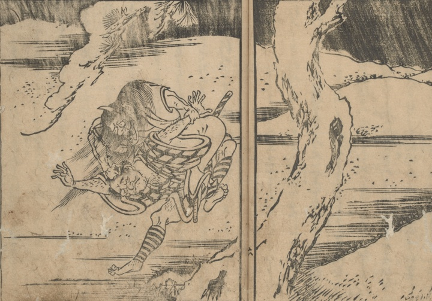

化物；バケモノ，女

目を見開き、口は耳まで裂け、頭に角が生えた髪の長い女の化物。男の背中に乗って手や頭髪を引っ張り、殺そうとしている。
著作者：禿箒子著，橘岷江画／出典：親書誌：U426_nichibunken_0469：怪談國土産；カイダンクニミヤゲ／日付：2025／資源識別子：U426_nichibunken_0469_0003_0000
Copyright (c)2010- International Research Center for Japanese Studies, Kyoto, Japan. All rights reserved.